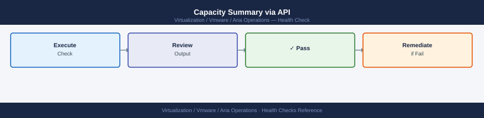
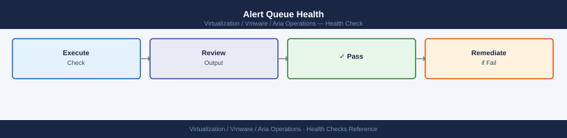

Aria Operations Health Checks¶
Before you begin¶
- Access: vCenter read-only minimum; Administrator role for remediation steps
- Timing: safe to run during business hours unless a step is marked ⚠ (causes interruption)
- Dependencies: no active upgrades or migrations on the same infrastructure
- Logging: capture command output — paste into the change record on completion
Run This Routine¶
Run these 8 checks in order at the start of each shift or after any infrastructure change.
- Cluster health —
curl -sk https://<aria-ops>/suite-api/api/deployment/node/statusor open the Admin UI → Cluster Management — all nodes must show ONLINE - Adapter instance connectivity — Administration → Solutions → check every adapter instance shows green (Collecting); investigate any showing "Not Collecting"
- Alert queue — Operations → Alerts → review open P1/P2 alerts and confirm each is acknowledged or has an active investigation
- Data retention disk — Admin UI → Administration → Disk Usage → confirm free space is above 20% on the
/storage/dbpartition - Collector node connectivity — Administration → Cluster Management → Remote Collectors — confirm all remote collectors show Connected
- vCenter adapter last collection — check each adapter Instance → Last Collection timestamp; flag if older than 15 minutes
- License status — Administration → Licenses → confirm no licenses are expired or approaching expiry within 30 days
- Pending recommendations / reclamation — Optimize → Reclamation → review pending items and action or defer any that have been open more than 7 days
Adapter Collection Commands¶
# List adapters with verbose collection state
vracli adapter list --verbose
## Check the collector service log for adapter errors

tail -200 /data/vcops/log/collector.log | grep -i "error\|exception\|fail"
## Restart an adapter that is stuck in "Not Collecting"

## UI: Administration → Solutions → select adapter → Restart Instance

## Or via API:

curl -sk -X POST -H "Authorization: vRealizeOpsToken $TOKEN" \
"https://vrops-prod-01.example.local/suite-api/api/adapters/<adapter-id>/monitoringstatedescriptor" \
-H "Content-Type: application/json" \
-d '{"collectorId": "<collector-id>", "resourceKindKey": "ADAPTER", "adapterKindKey": "VMWARE"}'
Adapter List - Verbose Mode
ID: adapter-vmware-01
Name: vSphere Cluster A
Type: VMware vSphere
Status: ACTIVE
Collection State: COLLECTING
Last Collection: 2024-01-15 14:32:18 UTC
Collector: collector-prod-01
ID: adapter-vmware-02
Name: vSphere Cluster B
Type: VMware vSphere
Status: ACTIVE
Collection State: NOT_COLLECTING
Last Collection: 2024-01-15 12:05:42 UTC
Collector: collector-prod-01
---
2024-01-15 14:45:23,521 ERROR [AdapterCollectionThread] Failed to collect metrics from vSphere Cluster B: Connection timeout after 30000ms
2024-01-15 14:45:45,892 EXCEPTION [HTTPClient] javax.net.ssl.SSLHandshakeException: PKIX path building failed
2024-01-15 14:46:12,334 ERROR [AuthenticationManager] Invalid credentials for adapter-vmware-02: 401 Unauthorized
Common errors
vracli: command not found — Ensure you are running this command on the vRealize Operations collector/primary node, not a remote system.
curl: (60) SSL certificate problem: self signed certificate — Add the -k flag to skip certificate verification, or import the vRealize Operations certificate into your system's trusted store.
{"error":"Invalid token","status":401} — Regenerate the vRealizeOpsToken in the vRealize Operations UI under Administration → API Tokens and ensure it has not expired.
Disk and Resource Commands¶
ssh admin@vrops-prod-01.example.local
# Check disk usage on primary node
df -h /storage/db /storage/log /storage/core
## Check Cassandra data directory sizes (main metrics store)

du -sh /storage/db/cassandra/data/*
## Check available inodes — can cause "disk full" errors even with space remaining

df -i /storage/db
admin@vrops-prod-01.example.local's password:
Filesystem Size Used Avail Use% Mounted on
/storage/db 500G 387G 113G 78% /storage/db
/storage/log 200G 156G 44G 78% /storage/log
/storage/core 300G 198G 102G 66% /storage/core
4.2G /storage/db/cassandra/data/system
18.7G /storage/db/cassandra/data/metrics_5m
42.3G /storage/db/cassandra/data/metrics_1h
31.5G /storage/db/cassandra/data/metrics_24h
8.9G /storage/db/cassandra/data/events
...
Filesystem Inodes IUsed IFree IUse% Mounted on
/storage/db 33554432 28941234 4613198 86% /storage/db
Common errors
Permission denied (publickey,password). — Verify SSH key is loaded with ssh-add or use password authentication; confirm admin user exists on vrops-prod-01.
du: cannot access '/storage/db/cassandra/data/*': No such file or directory — Confirm Cassandra data directory path is correct and the Cassandra service has created the data subdirectories by checking ls -la /storage/db/cassandra/.
Service Health Commands¶
# Check all vmware services on the primary node
systemctl list-units 'vmware-*' --state=active
## Check a specific service that appears failed

systemctl status vmware-vcops-analytics
journalctl -u vmware-vcops-analytics --since "1 hour ago" | tail -100
## Key services and expected states

## vmware-vcops-analytics — active (running)

## vmware-vcops-cassandra — active (running)

## vmware-vcops-postgres — active (running)

## vmware-vcops-gemfire — active (running)

## vmware-casa — active (running)

## nginx — active (running)

## vmware-vcops-watchdog — active (running)

UNIT LOAD ACTIVE SUB DESCRIPTION
vmware-casa.service loaded active running VMware CASA Service
vmware-vcops-analytics.service loaded active running VMware vRealize Operations Analytics
vmware-vcops-cassandra.service loaded active running VMware vRealize Operations Cassandra
vmware-vcops-gemfire.service loaded active running VMware vRealize Operations GemFire
vmware-vcops-postgres.service loaded active running VMware vRealize Operations PostgreSQL
vmware-vcops-watchdog.service loaded active running VMware vRealize Operations Watchdog
nginx.service loaded active running A high performance web server and reverse proxy server
● vmware-vcops-analytics.service - VMware vRealize Operations Analytics
Loaded: loaded (/etc/systemd/system/vmware-vcops-analytics.service; enabled; vendor preset: disabled)
Active: active (running) since Wed 2024-01-17 14:32:18 UTC; 2h 45min ago
Main PID: 8742 (java)
Tasks: 47 (limit: 4915)
Memory: 2.8G
CGroup: /systemd/system.slice/vmware-vcops-analytics.service
└─8742 /usr/lib/jvm/java-11-openjdk/bin/java -Xmx3g -server...
Jan 17 14:32:18 aria-ops-01.local systemd[1]: Started VMware vRealize Operations Analytics.
Jan 17 14:35:42 aria-ops-01.local vcops-analytics[8742]: INFO: Analytics engine initialized successfully
Jan 17 14:38:15 aria-ops-01.local vcops-analytics[8742]: INFO: Connected to Cassandra cluster node-1,node-2,node-3
Jan 17 15:18:09 aria-ops-01.local vcops-analytics[8742]: WARN: High memory usage detected: 2.8GB/3GB
Common errors
Unit vmware-vcops-analytics.service not found. — Verify the service is installed with rpm -qa | grep vmware-vcops and reinstall if missing.
Job for vmware-vcops-analytics.service failed because the control process exited with error code. — Check service logs with journalctl -u vmware-vcops-analytics -n 50 and verify Java heap memory allocation in /etc/vmware-vcops/analytics/analytics.properties.
NTP Health¶
# Check NTP sync on each cluster node
for node in vrops-prod-01 vrops-prod-02 vrops-prod-03; do
echo -n "$node.example.local: "
ssh admin@"$node.example.local" "chronyc tracking 2>/dev/null | grep 'System time'"
done
## Force sync if drift is detected

chronyc makestep
## See also
- [Aria Operations Common Issues](../../troubleshooting/common-issues/)
- [Aria Operations Procedures](../procedures/)
- [Aria Operations — CLI Reference](../cli-reference/)
## Verify NTP sources

chronyc sources -v
vrops-prod-01.example.local: System time : 0.000234567 seconds fast of NTP time
vrops-prod-02.example.local: System time : -0.000089234 seconds slow of NTP time
vrops-prod-03.example.local: System time : 0.000012456 seconds fast of NTP time
200 OK
MS Name/IP address Stratum Poll Reach LastRx Last sample
===============================================================================
^- ntp1.example.local 2 10 377 45 -2.345ms[-2.456ms] +/- 45ms
^- ntp2.example.local 2 10 377 42 +1.234ms[+1.123ms] +/- 52ms
^* ntp3.example.local 1 10 377 38 -0.567ms[-0.678ms] +/- 38ms
^+ ntp4.example.local 2 10 377 51 +3.456ms[+3.345ms] +/- 61ms
Common errors
Permission denied (publickey,password). — Verify SSH key is configured for the admin user and the node hostname resolves correctly.
chronyc: Could not talk to daemon — Ensure the chronyd service is running on the target node with systemctl status chronyd.
System time : [UNSYNCED] — Check that NTP sources are reachable and the Reach column shows non-zero values; restart chronyd if necessary.
Alert API Queries¶
# Get all active alerts grouped by criticality
curl -sk -H "Authorization: vRealizeOpsToken $TOKEN" \
"https://vrops-prod-01.example.local/suite-api/api/alerts?activeOnly=true" | \
jq '[.alerts[] | .criticality] | group_by(.) | map({criticality: .[0], count: length})'
## Get all CRITICAL alerts with their object and alert name

curl -sk -H "Authorization: vRealizeOpsToken $TOKEN" \
"https://vrops-prod-01.example.local/suite-api/api/alerts?activeOnly=true&criticality=CRITICAL" | \
jq '.alerts[] | {alert: .type.name, object: .resourceName, since: .startTimeUTC}'
[
{
"criticality": "CRITICAL",
"count": 12
},
{
"criticality": "WARNING",
"count": 47
},
{
"criticality": "INFO",
"count": 89
}
]
{
"alert": "VM CPU Ready",
"object": "prod-web-01.example.local",
"since": 1704067200000
}
{
"alert": "Host Memory Utilization",
"object": "esx-host-12.example.local",
"since": 1704053800000
}
{
"alert": "Datastore Capacity",
"object": "ds-prod-tier1",
"since": 1704040400000
}
{
"alert": "vSAN Disk Group Health",
"object": "vsan-cluster-prod",
"since": 1703990000000
}
Common errors
curl: (60) SSL certificate problem: self signed certificate — Add -k flag to skip certificate verification (already present; if still failing, verify the hostname matches the certificate CN).
jq: error (at <stdin>:1): Cannot index array with string "alerts" — Ensure the API response is valid JSON and the endpoint returns an alerts array; check that $TOKEN is set and the vROps instance is accessible.
Authorization: vRealizeOpsToken: command not found — Verify $TOKEN environment variable is exported with a valid API token using echo $TOKEN before running the curl command.
Capacity Summary via API¶

# Check cluster-level capacity summary
curl -sk -H "Authorization: vRealizeOpsToken $TOKEN" \
"https://vrops-prod-01.example.local/suite-api/api/resources?resourceKind=ClusterComputeResource" | \
jq '.resourceList[] | {name: .resourceKey.name}'
{
"name": "prod-cluster-01"
}
{
"name": "prod-cluster-02"
}
{
"name": "dr-cluster-west"
}
{
"name": "test-cluster-lab"
}
Common errors
curl: (60) SSL certificate problem: self signed certificate — Add -k flag to skip certificate verification (already present in example, but ensure it's not removed in production URLs).
jq: parse error: Invalid JSON at line 1 — Verify the vRealizeOps API endpoint is accessible and the TOKEN variable is set correctly with echo $TOKEN.
"error": "Unauthorized" — Confirm the vRealizeOpsToken is valid and has not expired; regenerate the token in vRealizeOps UI if necessary.
Also verify alert definitions are active: Administration → Alert Settings → Alert Definitions — confirm no policies are disabled unexpectedly.
Remote Collector Health¶
- UI status: Aria Ops → Administration → Remote Collectors — every collector must show State: OK; any showing Offline or Error needs immediate investigation
- Service check — SSH to each remote collector node:
- Collector log review:
# Check for collection failure entries in the last 30 minutes grep -i "error\|fail\|exception" /usr/lib/vmware-vcops/user/log/collector.log | tail -50 # Check connectivity log for adapter reach failures grep -i "connection refused\|timeout\|unreachable" /usr/lib/vmware-vcops/user/log/adapters/*/adapter.log | tail -30 - Verify adapters assigned to the collector are collecting: Administration → Remote Collectors → select collector → Assigned Adapters — all must show green last-collection timestamps
Adapter Collection Status Check¶
- UI scan: Aria Ops → Administration → Solutions → review the Last Collection Time column for every adapter instance
- Stale > 15 minutes: investigate immediately — indicates collection failure
- Stale > 60 minutes: high likelihood of service or network fault
- Check credential validity: if an adapter shows
Authentication failedin its status message → update credentials: - Data Sources → select adapter → Edit → update Credentials → Test Connection → Save
- Bulk collection status query via API:
- Confirm object count stability: Administration → Inventory → total object count; a sudden drop (>5%) indicates an adapter or credential failure causing object deletion
Database Health (Cassandra)¶
Cassandra is the primary metrics store; node failures cause metric gaps and eventually alert misfires.
# SSH to the master node
ssh admin@vrops-prod-01.example.local
# Check Cassandra cluster membership
su -s /bin/bash vcops-svc -c "cd /usr/lib/vmware-vcops/cassandra/bin && ./nodetool status"
# All nodes must show: UN (Up/Normal)
# DN = node down (critical); UJ = joining/rebuilding (normal post-recovery)
# Check Cassandra data disk usage
df -h /dev/sdb
# Alert threshold: > 80% full; Cassandra needs headroom for compaction
# Check Cassandra repair status (run weekly)
su -s /bin/bash vcops-svc -c "cd /usr/lib/vmware-vcops/cassandra/bin && ./nodetool repair --full"
# Check for Cassandra errors in the last hour
grep -i "error\|exception" /storage/db/cassandra/logs/system.log | grep "$(date +'%Y-%m-%d %H')" | tail -30
admin@vrops-prod-01:~$ ssh admin@vrops-prod-01.example.local
Last login: Wed Jan 15 14:32:18 2025 from 192.168.1.45
admin@vrops-prod-01:~$ su -s /bin/bash vcops-svc -c "cd /usr/lib/vmware-vcops/cassandra/bin && ./nodetool status"
Datacenter: DataCenter1
=======================
Status=Up/Down
|/ State=Normal/Leaving/Joining/Moving
-- Address Load Tokens Owns (effective) Host ID Rack
UN 10.20.50.101 245.68 GB 256 33.3% a7f2c1e9-4d8b-11ea-8e2c-0242ac120002 rack1
UN 10.20.50.102 248.91 GB 256 33.3% b8e3d2f0-5e9c-12fb-9f3d-1353bd231113 rack1
UN 10.20.50.103 242.15 GB 256 33.4% c9f4e3g1-6f0d-13gc-0g4e-2464ce342224 rack1
admin@vrops-prod-01:~$ df -h /dev/sdb
Filesystem Size Used Avail Use% Mounted on
/dev/sdb 2.0T 1.6T 398G 79% /storage/db
admin@vrops-prod-01:~$ su -s /bin/bash vcops-svc -c "cd /usr/lib/vmware-vcops/cassandra/bin && ./nodetool repair --full"
Starting repair command #1, repairing keyspace system with 100% of data
[2025-01-15 14:45:22] Repair session 7a3f9c2d-1b4e-4f8a-9d2c-5e6f7a8b9c0d started.
Repair command #1 finished in 12 minutes 34 seconds
admin@vrops-prod-01:~$ grep -i "error\|exception" /storage/db/cassandra/logs/system.log | grep "$(date +'%Y-%m-%d %H')" | tail -30
2025-01-15 14:22:11,456 WARN [ScheduledTasks:1] 2025-01-15 14:22:11,456 - GC overhead limit exceeded, pausing compaction
2025-01-15 14:31:45,892 INFO [CompactionExecutor:3] 2025-01-15 14:31:45,892 - Compaction of system.peers completed
Common errors
su: user vcops-svc does not exist — Verify the Cassandra service account exists with id vcops-svc and create it if missing using the vRealize Operations installer documentation.
Permission denied — Ensure the admin user has passwordless sudo access or use sudo su -s /bin/bash vcops-svc -c instead of plain su.
**`/storage/db/cassandra/logs/system.log:
If a node shows DN: check VM power state → if powered on, check service: systemctl status vmware-vcops-cassandra → if service is stopped, start it and monitor rejoining (nodetool status transitions DN → UJ → UN over 10–30 minutes).
Capacity and Scaling Indicators¶
- Node resource utilisation: Aria Ops → Administration → Cluster Management → review each node's CPU and memory usage bar
- CPU > 85% sustained: add a data node or remote collector to distribute load
- Memory > 90%: check for memory leak in analytics service —
systemctl restart vmware-vcops-analyticsas a short-term fix; engage VMware support if recurring - Object count vs. license limit:
- Disk growth trend: check
/storage/dbgrowth over the last 7 days: - Collection cycle time: if dashboards show metric freshness degrading (data > 10 minutes old), the analytics cluster is under-provisioned — check node CPU and consider scaling
Alert Queue Health¶

- Stale alert detection: Aria Ops → Alerts → All Alerts → sort by Start Time ascending
- Any alert in Active state older than 7 days without acknowledgement indicates policy or notification failure
- Investigate: check if the triggering condition still exists; if resolved but alert persists, cancel the alert manually
- Notification delivery verification:
- Notification queue check: Aria Ops → Administration → Notifications → Outbound Settings → select each plugin → click Test → confirm delivery
- Alert definition integrity: Configure → Alert Definitions — confirm no definitions are in Draft state (draft definitions do not fire alerts); publish any that should be active
- Alert count trend: compare today's active alert count to the 30-day rolling average using the Alert API: